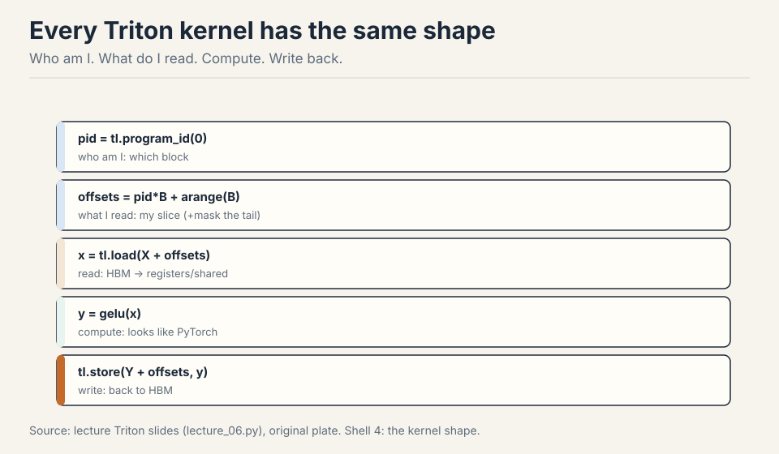
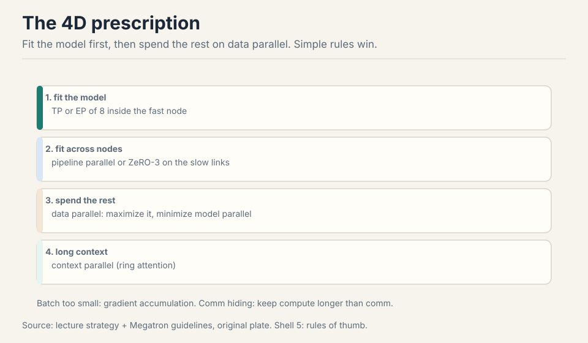
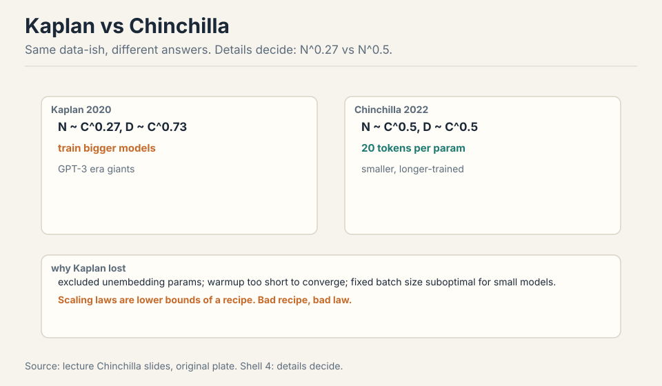

CS336 Crash Course
30 minutes · interview speed
This page tells the whole story fast. Each section gives you the working version: enough to answer interview questions with confidence. Links at the end of each section take you into the full lesson when you want the derivations, the figures, and the follow-ups.
1. A language model predicts the next token
Take any sentence. A language model looks at the words so far and assigns a probability to every possible next word. “The cat sat on the” gives high probability to “mat”, low probability to “xylophone”.
The chain rule turns this small trick into a full sentence model. The probability of a whole sentence is the product of each word’s probability given all the words before it. Train the model to maximize this product over billions of sentences, and it learns grammar, facts, and style as a side effect of prediction.

This is the one idea everything else hangs on. If an interviewer asks “what is a language model”, start here, then add the pipeline below.
- Lecture 1: the full derivation (chain rule, probability setup)
2. The pipeline: text to IDs to vectors to text
Raw text cannot enter a neural network. Numbers can. So the first stage is tokenization: chop text into pieces, map each piece to an integer ID. The second stage is embedding: each ID indexes one row of a learned matrix, turning the integer into a vector of thousands of numbers. The model then scores every possible next token. The winner decodes back to text.
Two facts about this pipeline show up in interviews constantly. First, the tokenizer is fixed before training starts. Every ID points at a learned row. Swap the tokenizer and the IDs point at wrong rows: the model breaks. Second, everything downstream is counted in tokens, not words. Context windows, pricing, and speed all run on tokens.

3. Characters are too fine, words are too coarse
The first tokenizers used characters. Twenty-six letters plus symbols: a tiny vocabulary that never fails on new text. The price is length. “Hello” becomes 5 tokens, and attention costs grow quadratically with length, so long sequences get expensive fast.
Word tokenizers went the other way. One token per word gives clean linguistic units, but English has 170,000+ words and new ones appear daily. Any word outside the vocabulary is an “unknown” token, and the model learns nothing about it. For an open vocabulary, word-level is dead.

4. BPE: merge what appears together
Byte-pair encoding takes the middle path. Start with single characters. Count which adjacent pairs appear most often in a large corpus. Merge the winner into a single token. Repeat tens of thousands of times. Common words like “the” become one token. Rare words stay split into pieces. Nothing is ever unknown: any text reduces to characters in the worst case.

Training is the counting step. Inference is simpler: walk the text left to right, always take the longest vocabulary entry that matches. This greedy longest-match is fast but not optimal. A global optimizer would sometimes split words differently. In practice nobody pays that cost.

5. Fertility: the number that sets your bill
Fertility is tokens per word. English sits near 1.3. Some languages need 3 or more tokens for the same word, because the training corpus was mostly English and the vocabulary reflects it. This is corpus bias, and it has teeth: you pay per token, and the context window counts tokens. A language with 3x fertility costs 3x more and fits 3x less text in context.

Interviewers love this topic because it connects a low-level detail to money and product quality. Know the definition, know the English number, know why it varies.
6. Token IDs become vectors
The last step before the network: each integer ID indexes one row of the embedding matrix. Token 1169 becomes a vector of, say, 12,288 learned numbers. The mapping is lossless: the same text always produces the same IDs, so nothing is lost in translation.

The matrix is huge. 50,000 vocabulary entries times 12,288 dimensions is over 600 million parameters before the model does anything at all. This is why vocabulary size is a real design decision, not a footnote.
7. Tokenization sets three bills
Everything downstream of the tokenizer runs on tokens, and that fact sets three bills. Context: the window counts tokens, so a 4,096-token window holds about 3,000 English words but far fewer words in a high-fertility language. Money: pricing is per token, so fertility multiplies the invoice directly. Speed: attention costs grow quadratically in tokens, so long token sequences are expensive twice over.
This is why tokenizer choice is a product decision, not a detail. Pick the vocabulary, and you pick the cost structure of everything after it.
8. Resource accounting: FLOPs, bytes, and the roofline
Training a model costs 6ND FLOPs: six times params times tokens. Backward is twice forward. The number everyone quotes is MFU: model FLOPs utilization, actual throughput divided by the GPU’s promise. 0.5 is good. 0.1 is broken.
Memory is elements times bytes. bf16 is the sweet spot for weights and activations. fp32 stays for optimizer states. AdamW costs about 12 bytes per param. The roofline says: if your arithmetic intensity (FLOPs per byte moved) sits below the knee, you are memory-bound and shrinking the model is pointless. Buy bandwidth instead.

Interviewers ask this to check whether you can size a training run. Know 6ND, know MFU, know where the bottleneck is.
9. The modern transformer: prenorm, GLU, RoPE
Three changes define the modern block. Prenorm: normalization sits outside the residual stream, so gradients flow straight through. SwiGLU: a gated MLP that is smaller per parameter but stronger. RoPE: rotary position embeddings that multiply by position instead of adding it, giving relative positions for free.
Dropping biases, using RMSNorm, and shrinking the feed-forward dim by two-thirds are all free or near-free wins. Serial blocks beat parallel ones. Stability tools (z-loss, QK norm, soft capping) keep the softmax from exploding at scale.

10. Linear attention and mixture of experts
Attention costs O(n^2) in sequence length. Linear attention drops the softmax and re-associates the math: Q(K’V) instead of (QK’)V. That turns n^2 d into n d^2. Mamba-2 and gated delta nets make the forget gate input-dependent. Hybrids mix a few full attention layers with many linear ones.
MoE splits the feed-forward layer into experts and routes each token to a few of them. Parameters grow. FLOPs per token stay flat. The hard parts are routing (top-K token choice) and load balance (an auxiliary loss keeps experts even, because dead experts are wasted money).

11. GPUs: the memory hierarchy decides everything
A GPU has 108-ish streaming multiprocessors running thousands of threads. The memory hierarchy is the whole game: registers at ~1 cycle, shared memory at 20-30, HBM an order of magnitude slower, and interconnects slower still. SRAM is a hundred times more expensive than DRAM, so there is almost no SRAM.
Three programming rules: fuse kernels (read once, write once), coalesce memory (128-byte bursts on the major axis), and tile loops to fit SRAM. Low precision halves the bytes moved. Wave quantization: if your work is not divisible by the SM count, some SMs idle while others finish. The mystery plot is divisibility.

12. Triton kernels: write the inner loop
Triton compiles Python-ish code into GPU kernels. The mental model: a grid of blocks, each block on one SM, threads in warps of 32 lockstep. Shared memory per block, registers per thread. Occupancy is how many warps stay alive to hide HBM latency. It is capped by registers and the 64-warp limit.
Rules that win: warm up and repeat when benchmarking. Fused beats naive (the GeLU race). Tile matmuls with accumulation in shared memory. Swizzle to dodge bank conflicts. Kernel names encode the library, architecture, dtype, and tile sizes, so learn to read them.

13. Parallelism: data, tensor, pipeline
One GPU cannot hold a big model or finish it fast enough. Three classical splits. Data parallel: split the batch, all-reduce the gradients. Tensor parallel: split each matrix, all-gather forward and reduce-scatter backward, needs NVLink speed. Pipeline parallel: split layers across GPUs, feed micro-batches to kill the bubble.
The interconnect ladder: HBM at 8 TB/s, NVLink at 1.8 TB/s, InfiniBand across nodes, Ethernet last. RDMA lets GPUs talk without the CPU. NCCL turns collectives into packets. Match the split to the bandwidth: tensor parallelism dies on slow links.

14. 4D parallelism at scale
At frontier scale you use all four dimensions at once: data, tensor, pipeline, and context (sequence) parallelism, plus expert parallelism for MoE. ZeRO shards the optimizer states, gradients, and finally the parameters themselves across data-parallel ranks. the extra communication is hidden under compute overlap.
The prescription order: fit the model in memory first (ZeRO-3), then cut the batch at the critical batch size, then add pipeline with enough micro-batches to hide bubbles, then tensor parallel within a node only. For MoE, prefer expert parallelism over tensor parallelism. Context parallel (ring attention) handles million-token sequences.

15. Scaling laws: predict, then spend
On log-log axes, loss versus compute is a straight line: a power law. That lets you train small, fit the line, and extrapolate to big. Kaplan said parameters scale like N^0.27. Chinchilla corrected it to N^0.5: about 20 tokens per parameter. Overtraining small models is a real deployment strategy, not a mistake.
Three ways to fit: the envelope over all runs, IsoFLOP slices at fixed compute (the default), or parametric fits. Data mixtures move the intercept, not the slope. Four epochs of repetition are safe. Fit on perplexity, but verify on downstream tasks.

16. Inference: prefill is compute, decode is memory
Generation splits into two phases. Prefill processes the prompt in parallel: compute-bound, like training. Decode generates one token at a time and reloads the whole model for each one: memory-bandwidth bound. The KV cache is what makes this affordable: store past keys and values instead of recomputing them.
The cache formula: batch times sequence times layers times KV heads times head dim, times 2 bytes, times 2 for K and V. Shrink it with GQA (fewer KV heads), MLA (compress to a latent), or sliding windows. Speculative decoding drafts K tokens with a small model and verifies them in parallel with the big one.

17. Advanced scaling: muP, WSD, and optimizer honesty
muP (maximal update parametrization) makes the optimal learning rate stable across model widths, so hyperparameters tuned small transfer to big. The WSD schedule (warmup, stable, decay in the last 10-20 percent) lets you reuse one training run at multiple token budgets by rewinding and re-decaying.
Two philosophies: stabilize (muP, careful parametrization) versus fit (DeepSeek’s empirical sweeps). Optimizer claims need honest baselines: watch the compute-times-Chinchilla ratio, tune the baseline as hard as the new method. Muon (momentum plus Newton-Schultz orthogonalization) is the current challenger.

18. Evaluation: from perplexity to agents
Perplexity is mass on test text. The best possible model hits the data’s entropy. It catches cheap wins (boring tokens) but misses what users feel. Exams (MMLU, GPQA, Humanity’s Last Exam) saturate in sequence: 90s, 94, 64.7. Chat evaluation went to pairwise ELO arenas and LLM judges with debiasing. Agents get real tasks: SWE-bench (93 percent verified), terminal benchmarks, cyber ranges.
Two warnings. The scaffold is half the score: the same model with a better tooling wins. And contamination is everywhere: assume the model has seen the test unless the benchmark is private and recent.

19. Training data: the secret sauce
Data is the most secretive part of frontier models. The web is crawled (Common Crawl, monthly since 2007, ~300B pages), but half of it sits behind robots.txt, logins, and anti-bot systems. Copyright covers everything by default. Training is argued as fair use, while pirating the data (Anthropic’s $1.5B settlement) is not.
Quality lives in pockets: Wikipedia (poisonable), GitHub (permissive licenses only), arXiv (LaTeX source). History runs from BERT’s documents to GPT-2’s Reddit links to classifier-filtered web dumps. Rules versus classifiers is the eternal filter debate: rules are legible, classifiers learn the taste.

20. The data pipeline: dedupe and mix
Raw web text is unusable. Transform it (HTML to text, tables are hard, PDFs are rare and valuable), filter it (fastText linear or KenLM generative classifiers. The threshold depends on your token budget), then dedupe it: exact spans (C4 removed 3-sentence repeats) and near-dupes via MinHash LSH, where collision probability equals Jaccard similarity.
Mixing is a distribution over sources, and the 50-epoch trap says small high-quality sources get over-repeated. UniMax caps repetition. RegMix replaces gut-feel mixing with a regression: train small proxy models on candidate mixes, fit, optimize, scale up.

21. Post-training: SFT plus RLHF
GPT-3 to ChatGPT was two steps: supervised fine-tuning on demonstrations, then RL from human feedback. SFT data evolved from FLAN to self-instruct to synthetic distillation (Alpaca, Vicuna) to agentic tool-call traces. The pitfalls: style is not capability, tail knowledge hallucinates, and RL recalibrates.
RLHF: sample responses, have humans rank them, train a reward model, optimize with PPO plus a KL penalty against drift. Safety took only hundreds of examples for Llama 2. Annotation is the hidden labor: experts cost $100-plus per hour, demographics transfer, and formatting is easier to judge than factuality.

22. RLVR: verifiable rewards
RLHF over-optimizes learned rewards. The model games the judge. RLVR (RL with verifiable rewards) uses rewards you can check: math answers, unit tests. Compute keeps helping because the reward cannot be fooled.
PPO is REINFORCE plus clipping plus 37 implementation details. GRPO drops the value network and z-scores advantages within each sampled group, fitting on one page. R1-Zero trained a base model with GRPO on accuracy plus format only and matched o1-style reasoning. The production recipe: long chain-of-thought SFT, then RL, then distill the traces into smaller models.

23. Multimodality: tokenize everything
The omni-model goal: any modality in, any out. Transformers speak tokens, so images must become tokens. CLIP did it with contrastive learning on 400M image-text pairs: 2N-way softmax, ViT-L/14, and text supplying semantics that augmentation never could. Zero-shot ImageNet beat a supervised ResNet. SigLIP replaced the softmax with binary sigmoid loss, decoupling batch size and training 5 days on 32 TPUv4s versus 10 days on 256 TPUv3s.
LLaVA stitched CLIP to Vicuna with a projector: align the projector first, then fine-tune. AnyRes crops images instead of downsampling them, and modalities transfer (OCR plus multi-image reasoning combines). The Qwen-VL lineage added dynamic resolution, M-RoPE over height-width-time, and DeepStack fusion. Chameleon’s elegant alternative, discrete tokens via VQ-VAE, lost detail and stability.

24. Serving inference: the other half of the model
A guest lecture on what happens after training. The token’s life: schedule the request, check the KV cache (radix-tree prefix sharing), run prefill (compute-bound, once) then decode (memory-bound, per token), sample and repeat. Prefill and decode run on different fleets. LPU chips and Cerebras target decode.
Continuous batching admits and evicts requests per step. KV memory is the hard limit. Cache-aware routing splits fresh requests (book pastes) from warm conversations for 40 percent faster serving. Megakernels fuse a whole layer into one kernel and overlap every load, reaching 72 percent of peak bandwidth. Parcae loops transformer blocks with the spectral radius under 1, trading parameters for flops.

25. Rapid-fire: say the answer before you read it
What is a language model? It assigns probabilities to next tokens. The chain rule extends this to whole sentences.
Why not characters? Sequences get 4-5x longer, and attention costs grow quadratically. Too slow.
Why not words? Open vocabulary. New words become unknowns. Dead end.
How does BPE train? Count adjacent pairs in a corpus, merge the most frequent, repeat ~50k times.
How does BPE tokenize new text? Greedy longest match, left to right.
What is fertility? Tokens per word. Sets cost and context usage.
Why does the tokenizer stay fixed? IDs index learned embedding rows. New IDs point at wrong rows. The model breaks.
What is wrong with number tokenization? “123” and “124” can split differently. Hurts arithmetic. Known limitation.
How would you improve tokenizers? Lower fertility for non-English languages, better code and math handling, tokenizer-aware training.
What does 6ND mean? Training FLOPs: six times params times tokens. Backward is twice forward.
What is MFU? Model FLOPs utilization: actual versus promised throughput. 0.5 is good. 0.1 is broken.
Why bf16 for weights but fp32 for optimizer states? bf16 has range but less precision. The optimizer needs precision to accumulate small updates.
Prenorm or postnorm? Prenorm. Gradients flow straight through the residual stream.
Why does RoPE multiply instead of add? Rotation by position gives relative positions by construction.
What does linear attention change? Drop softmax, re-associate: n^2 d becomes n d^2. Trade exactness for speed.
Why is MoE cheap per token? Route each token to a few experts. Parameters grow, FLOPs per token stay flat.
What kills naive MoE training? Load imbalance. Dead experts are wasted money. An auxiliary loss keeps them even.
What is the GPU memory hierarchy? Registers (~1 cycle), shared memory, HBM, then interconnects. SRAM is 100x the cost of DRAM.
Why fuse kernels? Read once, write once. Memory traffic dominates.
What is occupancy? Live warps per SM hiding HBM latency. Capped by registers and the 64-warp limit.
Three splits of parallelism? Data (batch, all-reduce grads), tensor (matrices, NVLink only), pipeline (layers, micro-batches kill bubbles).
What does ZeRO shard? Optimizer states, then grads, then params. Communication hides under compute overlap.
Kaplan or Chinchilla? Chinchilla: ~20 tokens per parameter. Overtrain small models for deployment.
How do you fit a scaling law? Log-log line. IsoFLOP slices at fixed compute are the default.
Prefill or decode: which is memory-bound? Decode. One token per full model load.
What is the KV cache? Stored keys and values. Naive recompute is cubic. Caching makes generation affordable.
How do you shrink the KV cache? GQA, MLA compression, sliding window, KV quantization.
muP in one line? Parametrize so the optimal learning rate transfers across widths.
What is WSD? Warmup, stable, decay in the last 10-20 percent. Rewind and re-decay to change token budgets.
What beats perplexity? Nothing for training. Everything for users: exams, arenas, agent benchmarks.
Why does MMLU saturate? Exams fall in sequence: MMLU, MMLU-Pro, GPQA, Humanity’s Last Exam. Contamination speeds it up.
What is the scaffold warning? The scaffold is half the score. Same model, better tooling, better number.
What is the 50-epoch trap? Small quality sources get over-repeated in the mix. UniMax caps repetition.
MinHash LSH in one line? Collision probability equals Jaccard similarity. Bands of rows make the S-curve.
What made ChatGPT? SFT on demonstrations plus RLHF: sample, rank, reward model, PPO with KL.
Why is safety cheap? Hundreds of well-chosen examples fix refusal behavior surgically.
RLVR over RLHF: why? Verifiable rewards (math, tests) cannot be gamed. Compute keeps helping.
GRPO versus PPO? GRPO z-scores advantages within a group. No value network. One page.
What was R1-Zero? Base model plus GRPO on accuracy and format only. Reasoning emerged.
CLIP in one line? 2N-way contrastive on 400M image-text pairs. Text supplies the semantics.
SigLIP over CLIP: why? Binary sigmoid loss. Batch size decoupled from the loss. 5 days versus 10.
LLaVA in one line? CLIP plus a projector plus Vicuna. Align the projector, then fine-tune.
Why AnyRes? Crop instead of downsample. 336x336 cannot read a document.
What is M-RoPE? RoPE over height, width, and time, concatenated.
Prefill versus decode fleets? Split them. LPU chips and Cerebras target decode.
What is cache-aware routing? Fresh requests and warm conversations never share GPUs. 40 percent faster.
Megakernels in one line? Fuse the whole layer into one kernel. Overlap every load. 72 percent of peak bandwidth.
Parcae in one line? Loop transformer blocks with spectral radius under 1. Flops without parameters.
What is the std-0 trap? In GRPO, groups where all rollouts agree have std near 0. Dividing by it explodes the update on groups with no learning signal.
What does Dr. GRPO delete? The std normalization and the length normalization. Advantages become reward minus group mean.
Work the decode tax. 70B params in bf16 is 140 GB. One decode step loads all 140 GB for one token. At 3.3 TB/s that is 42 ms per token.
When does disaggregation hurt? When traffic is uniform. The routing and KV transfer are pure cost with no bimodal mix to exploit.
Why is resolution a token purchase? A 1344px document page costs 9,792 image tokens (16 crops plus 1 overview at 576 each). The context window is the bottleneck, not the encoder.
CLIP vs SigLIP loss? CLIP: softmax over the batch, the batch is the objective. SigLIP: per-pair sigmoid, batch-size independent.
What is M-RoPE? RoPE over height, width, and time, concatenated. Position gets three axes.
muP in one line? Parametrize so the optimal learning rate transfers across widths.
What is the 50-epoch trap? Small high-quality sources get over-repeated in the mix. Cap them with UniMax.
Why did DeepSeek drop process supervision? Outcome supervision was enough and scaled better. Cheapest supervision that works wins.
What is cache-aware routing? Route low cache-hit requests to a cold prefill pool, warm ones to a warm pool. Two lines of code, 40 percent faster.
Batch 17 and the megakernel? The schedule is hand-tuned per batch size. A new size means retuning from scratch.
RLVR over RLHF: why? Verifiable rewards (math, tests) cannot be gamed the way learned rewards can. Compute keeps helping.
The reward-hacking lesson? The agent optimizes the reward, not the task. Every reward needs an adversary.
26. One-glance tables
Key formulas
| Formula | Meaning | Where |
|---|---|---|
| 6ND | Training FLOPs: 6 x params x tokens | L02 |
| 2BDK | One matmul’s FLOPs | L02 |
| 12 B/param | AdamW memory per parameter | L02 |
| 2BDL | Activation memory (approx) | L02 |
| O(n^2 d) -> O(n d^2) | Linear attention savings | L04 |
| 20 tok/param | Chinchilla-optimal data ratio | L09 |
| BSlayersKVheadsH22B | KV cache bytes | L10 |
| P(collision) = Jaccard | MinHash LSH guarantee | L14 |
| (1/b)^(1/r) | LSH S-curve threshold | L14 |
Numbers that answer interviews
| Number | Fact |
|---|---|
| 42 ms | Per-token decode latency, 70B bf16 on H100 |
| 140 GB | Weights loaded per decode step (70B bf16) |
| 295 | H100 roofline knee (FLOPs/byte) |
| 0.5 / 0.1 | MFU: good / broken |
| 9,792 | Image tokens for one 1344px document page |
| 32,768 | CLIP batch size (the loss is the batch) |
| 5 vs 10 days | SigLIP vs CLIP training (32 vs 256 TPUs) |
| 40% | Cache-aware routing speedup |
| 72% | Megakernel peak H100 bandwidth |
| 70.6% | Qwen3-Coder SWE-bench at 3B active |
| $1.5B | Anthropic piracy settlement (pirating != fair use) |
| 4 epochs | Safe data repetition limit |
What is used where
| Model | Attention | Position | Norm | Activation | Notes |
|---|---|---|---|---|---|
| Llama 3 | GQA (8 KV heads) | RoPE (base 500k) | RMSNorm | SwiGLU | tiktoken BPE 128K |
| DeepSeek-V3 | MLA | Decoupled RoPE | RMSNorm | SwiGLU MoE | 256 experts, top-8 |
| Gemma 2 | GQA (groups=2), SWA | RoPE | RMSNorm sandwich | GeGLU | Softcap 50/30 |
| Qwen3-235B | GQA (64Q/4KV) | RoPE (theta 1e6) | RMSNorm, QK-norm | SwiGLU MoE | 128 experts top-8 |
| Kimi K2 | MLA | RoPE | RMSNorm | SwiGLU MoE | 384 experts top-8 |
27. Memory aids
Mnemonics
- 6ND = “six end”: six times params times tokens. Training FLOPs.
- BREAD = the serving stack: Batch (continuous), Radix (prefix sharing), Evict (LRU tiers), Amplify (speculative), Disaggregate (fleets).
- FROZEN BRIDGE: LLaVA = freeze both ends, train the bridge.
- MEDIUM: Kimi’s curriculum trains on the medium-difficulty middle.
- The reward is the ceiling: RLVR in one line.
Never-confuse pairs
- FLOPs vs FLOP/s: work vs speed. Time = FLOPs / FLOP/s.
- Prefill vs decode: compute-bound once vs memory-bound per token.
- PPO vs GRPO: value network + clipping vs group baseline, no critic.
- SFT vs RL: imitate demonstrations vs optimize a reward.
- CLIP vs SigLIP: softmax over batch vs per-pair sigmoid.
- Dedup vs decontaminate: repeats within train vs test inside train.
- Data vs tensor parallel: split batch vs split matrices.
If-this-then-that
- If decode is slow, buy bandwidth. If prefill is slow, buy compute.
- If the batch is the objective, batch size is not a hyperparameter.
- If all rollouts agree, the advantage is 0. No update.
- If the mix is bimodal, disaggregate. If uniform, do not.
- If the context is long, compress the KV cache before adding GPUs.
- If the reward is learnable, expect over-optimization.
- If resolution matters, budget tokens first: 9,792 per page.
- If the mix has small quality sources, cap repetition (UniMax).